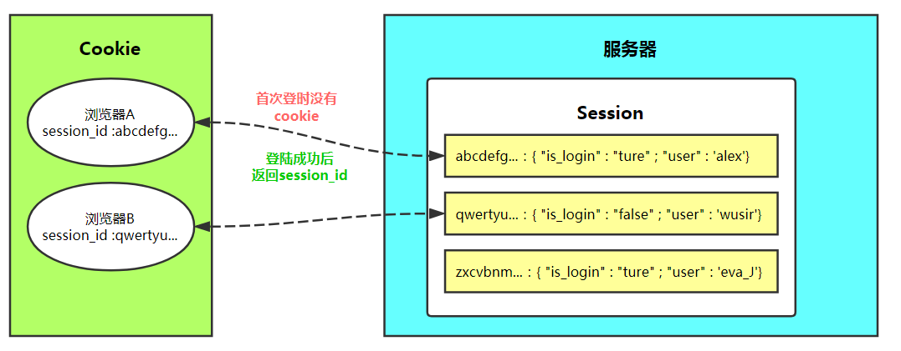

原文连接:https://www.cnblogs.com/tangjian219/p/11788941.html
Django
HTTP协议
超文本传输协议（英文：Hyper Text Transfer Protocol，HTTP）是一种用于分布式、协作式和超媒体信息系统的应用层协议。HTTP是万维网的数据通信基础.HTTP有很多应用,最著名的是用于Web浏览器服务器之间的双工通信.
HTTP是一个客户端(用户)和服务器端(网站)请求和应答的标准(TCP)..
一次请求一次响应就断开连接,无状态,短链接,格式包括头和体,请求头和请求体,响应头和响应体,请求头与请求头之间用一个\r\n,请求头与请求体用\r\n\r\nHTTP请求/响应的步骤:
1. 客户端连接到Web服务器
一个HTTP客户端,通常是浏览器,与Web服务器的HTTP端口(默认为80)建立一个TCP套接字连接.
2. 发送HTTP请求
通过TCP协议套接字,客户端向Web服务器发送一个文本的请求报文,一个请求报文由请求行,请求头部,空行和请求数据4部分组成.
3. 服务器接收请求并返回HTTP响应
Web服务器解析请求,定位请求资源.服务器将资源副本写到TCP套接字,由客户端读取.一个响应由状态行,响应头部,空行和响应数据4部分组成
4. 释放连接TCP连接
若connection 模式为close，则服务器主动关闭TCP连接，客户端被动关闭连接，释放TCP连接;若connection 模式为keepalive，则该连接会保持一段时间，在该时间内可以继续接收请求;
5. 客户端浏览器解析HTML内容
客户端浏览器首先解析状态行，查看表明请求是否成功的状态代码。然后解析每一个响应头，响应头告知以下为若干字节的HTML文档和文档的字符集。客户端浏览器读取响应数据HTML，根据HTML的语法对其进行格式化，并在浏览器窗口中显示。
在浏览器地址栏键入URL,按下回车之后经历的流程:
1. 浏览器向DNS服务器请求解析该URL中的域名所对应的的IP地址;
2. 解析出IP地址后,根据IP地址和默认端口80,和服务器建立TCP连接
3. 浏览器发出读取文件(URL中域名后面部分对应的文件)的HTTP请求,该请求报文作为TCP三次握手的第三个报文的数据发送给服务器.
4. 服务器对浏览器请求作出响应,并把对应的HTML文本发送给浏览器
5. 释放TCP连接
6. 浏览器将该HTML文本并显示内容
HTTP请求方法
1. GET
向指定的资源发出“显示”请求。使用GET方法应该只用在读取数据，而不应当被用于产生“副作用”的操作中，例如在Web Application中。其中一个原因是GET可能会被网络蜘蛛等随意访问。
2. HEAD
与GET方法一样，都是向服务器发出指定资源的请求。只不过服务器将不传回资源的本文部分。它的好处在于，使用这个方法可以在不必传输全部内容的情况下，就可以获取其中“关于该资源的信息”（元信息或称元数据）。
3. POST
向指定资源提交数据，请求服务器进行处理（例如提交表单或者上传文件）。数据被包含在请求本文中。这个请求可能会创建新的资源或修改现有资源，或二者皆有。
4. PUT
向指定资源位置上传其最新内容。
5. DELETE
请求服务器删除Request-URI所标识的资源。
6. TRACE
回显服务器收到的请求，主要用于测试或诊断。
7. OPTIONS
这个方法可使服务器传回该资源所支持的所有HTTP请求方法。用'*'来代替资源名称，向Web服务器发送OPTIONS请求，可以测试服务器功能是否正常运作
8. CONNECT
HTTP/1.1协议中预留给能够将连接改为管道方式的代理服务器。通常用于SSL加密服务器的链接（经由非加密的HTTP代理服务器）。HTTP状态码
所有HTTP响应的第一行都是状态行，依次是当前HTTP版本号，3位数字组成的状态代码，以及描述状态的短语，彼此由空格分隔。
状态代码的第一个数字代表当前响应的类型：
+ 1xx消息——请求已被服务器接收，继续处理
+ 2xx成功——请求已成功被服务器接收、理解、并接受 ***
+ 3xx重定向——需要后续操作才能完成这一请求
+ 4xx请求错误——请求含有词法错误或者无法被执行
404: NOT FIND(服务器上没有) 403 服务器上有,但是没有权限 ***
+ 5xx服务器错误——服务器在处理某个正确请求时发生错误URL
超文本传输协议（HTTP）的统一资源定位符将从因特网获取信息的五个基本元素包括在一个简单的地址中：
+ 传送协议。
+ 层级URL标记符号(为[//],固定不变)
+ 访问资源需要的凭证信息（可省略）
+ 服务器 -- (通常为域名，有时为IP地址）
+ 端口号 -- (以数字方式表示，若为HTTP的默认值":80",https 端口默认":443"可省略）
+ 路径 -- (以“/”字符区别路径中的每一个目录名称）
+ 查询 -- (GET模式的窗体参数，以“?”字符为起点，每个参数以“&”隔开，再以“=”分开参数名称与数据，通常以UTF8的URL编码，避开字符冲突的问题）
+ 片段 -- 以“#”字符为起点
`https://www.sogou.com:443/web?query=海水两边颜色不同&_asf=www.sogou.com&_ast=&w=01015002&p=40040108&ie=utf8&from=index-nologin&s_from=index&oq=&ri=0&sourceid=sugg&suguuid=&sut=0&sst0=1566374533005&lkt=0%2C0%2C0&sugsuv=0003ECF37B7010FB5D174856999B7817&sugtime=1566374533005`
+ http，是协议；
+ www.sogou.com是域名,服务器
+ 443是服务器上的网络端口号
+ /web 是路径
+ ?query=海水两边颜色不同 : 问号之后是查询参数web框架
web框架的本质 : socket服务端
web框架的功能
1. 使用socket收发消息
2. 根据不同的路径返回不同的内容
3. 返回动态的数据(字符串的替换 -- 模板的渲染(使用jinja2) )
分类:
+ Django实现 2 3 功能
+ flask 实现 2 功能
+ tornado 实现 1 2 3功能服务器程序和应用程序
对于真实开发中的python web程序来说，一般会分为两部分：服务器程序和应用程序。
服务器程序负责对socket服务端进行封装，并在请求到来时，对请求的各种数据进行整理。
应用程序则负责具体的逻辑处理。为了方便应用程序的开发，就出现了众多的Web框架，例如：Django、Flask、web.py 等。不同的框架有不同的开发方式，但是无论如何，开发出的应用程序都要和服务器程序配合，才能为用户提供服务。
**WSGI**（Web Server Gateway Interface）就是一种规范，它定义了使用Python编写的web应用程序与web服务器程序之间的接口格式，实现web应用程序与web服务器程序间的解耦。( **跨站请求伪造** )
常用的WSGI服务器有uWSGI、Gunicorn。而Python标准库提供的独立WSGI服务器叫wsgiref，Django开发环境用的就是这个模块来做服务器。Django处理请求的一个流程
1. 在浏览器上输入地址,回车,发送一个get请求
2. wsgi模块接受请求,把请求相关的内容封装成request对象
3. 根据url地址,找到对应的函数
4. 执行函数,得到返回值.wsgi模块将httpresponse对象按照http响应格式发送给浏览器Django的所有命令
下载安装
命令行
pip3 install django==1.11.23 -i https://pypi.tuna.tsinghua.edu.cn/simple -- (源地址)
pycharm
创建项目
命令行
django-admin startproject 项目名称
pycharm
flie _ new_project _ django _ 项目路径 选解释器
启动项目
首先切换到项目的根目录
命令行
- python manage.py runserver # 127.0.0.1:8000
- python manage.py runserver 80 # 127.0.0.1:80 修改端口号
- python manage.py runserver 0.0.0.0:80 # 0.0.0.0:80 修改IP和端口号
pycharm
点绿三角 dj --> 不要右键运行文件
创建APP
python manage.py startapp app名称
数据库迁移
python manage.py makemigrations # 记录索引APP下的models的变更记录
python manage.py migrate # 同步迁移记录
配置
url.py 文件
urls.py 写 url 与函数的对应关系,写函数
from django.shortcuts import HttpResponse,render
def func(request):
return HttpResponse('返回的字符串') # 返回字符串
def home(request):
return render(request,'home.html') # 返回html页面
urlpatterns = [
url(r'^admin/', admin.site.urls),
url(r'^func/', func), # 路径和函数的对应关系
url(r'^home/', home),
]静态文件的配置
STATIC_URL = '/static/' # 别名
STATICFILES_DIRS = [ # 按照列表的顺序进行查找
os.path.join(BASE_DIR, 'x1'),
os.path.join(BASE_DIR, 'static'),
os.path.join(BASE_DIR, 'x2')
]登录的实例
form表单
- action -- 提交的地址 , method -- 请求方法 ( 默认是get , 设置post )
- input 需要有name属性 , required表示必须填写(可以去掉)
- submit 提交的按钮或者input
- form表单 novalidate不需要校验
目前提交post请求,要注释一个csrf中间件 ( setting.py文件)
MIDDLEWARE = [
'django.middleware.security.SecurityMiddleware',
'django.contrib.sessions.middleware.SessionMiddleware',
'django.middleware.common.CommonMiddleware',
# 'django.middleware.csrf.CsrfViewMiddleware', # csrf中间件
'django.contrib.auth.middleware.AuthenticationMiddleware',
'django.contrib.messages.middleware.MessageMiddleware',
'django.middleware.clickjacking.XFrameOptionsMiddleware',
]request 和 response( 初识 )
request
# 发送get请求的方式:
- form表单,不指定method
- 在地址栏中直接输入地址,回车
- a标签
request.GET # url上携带的参数,获取到的数据是字典形式 ?k1=v1&k2=v2
request.GET.get('k1','xxx') # 获取某一个参数对应的值,没有就返回xxx
request.method # 请求的方法(一般用来做判断) -- GET POST PUT
#发送post请求:
form表单 : method = 'post'
request.POST # 获取所有form表单提交的数据
request.POST.get('k1','xxx') # 获取提交数据的某一个值,没有就返回xxxresponse
HttpResponse('字符串') # 返回字符串
render(request,'模板文件名',{'k1':v1,'k2':v2} # 返回一个完整的页面
redirect('/URL路径/') # 重定向,相当于响应头 Location:urlapp
新建app
python36 manage.py startapp app名字注册app
在setting中
INSTALLED_APPS = [
# 两种方法
'app01',
'app01.apps.App01Config', # 推荐写法
]目录:
admin.py django提供一个 admin工具
apps.py app的信息
models.py 模型 model 跟数据库有关
views.py 写函数HTTPRequest对象就是咱们的视图函数的参数request
# print(request) #<WSGIRequest: GET '/home/'>
# # print(dir(request))
#
# print(request.path) #/home/ 纯路径
# print(request.path_info) #/home/ 纯路径
# print(request.get_full_path()) #/home/?a=1&b=2 全路径(不包含ip地址和端口)
# print(request.META) #请求头相关数据,是一个字典
# print(request.method) #GET
# print(request.GET)
# print(request.POST)
# print(request.body) 能够拿到请求数据部分的数据(post,get没有)HTTPResponse对象
HTTPResponse('字符串')
render(request,'xx.html')
redirect 重定向#用法 redirect(路径) 示例:redirect('/index/')FBV和CBV 视图(视图函数和视图类)
类视图 CBV
views.py
from django.views import View
class LoginView(View):
# def dispatch(self, request, *args, **kwargs):
# print('xx请求来啦!!!!')
# ret = super().dispatch(request, *args, **kwargs)
# print('请求处理的逻辑已经结束啦!!!')
# return ret
def get(self,request): #处理get请求直接定义get方法,不需要自己判断请求方法了,源码中用dispatch方法中使用了反射来处理的
print('小小小小')
return render(request,'login.html')
def post(self,request):
print(request.POST)
return HttpResponse('登录成功')urls.py路由写法
url(r'^login/', views.LoginView.as_view()),视图加装饰器
视图函数FBV
def wrapper(func):
def inner(*args, **kwargs):
print(11111)
ret = func(*args, **kwargs)
print(22222)
return ret
return inner
@wrapper
def index(request):
print('xxxxx')
return HttpResponse('indexxxxxxxxx')
视图类CBV
from django.utils.decorator import method_decorator
@method_decorator(wrapper,name='get') # 方式3
class LoginView(View):
@method_decorator(wrapper) #方式2
def dispatch(self, request, *args, **kwargs):
print('xx请求来啦!!!!')
ret = super().dispatch(request, *args, **kwargs)
print('请求处理的逻辑已经结束啦!!!')
return ret
@method_decorator(wrapper) #方式1
def get(self,request):
print('小小小小')
return render(request,'login.html')
def post(self,request):
print(request.POST)
return HttpResponse('登录成功')模板渲染
{{ 变量 }} {% 逻辑 %} -- 标签万能的点
<h1>91李业网</h1>
<h2>{{ name }}</h2>
<h2>{{ d1.items }}</h2>
<h2>我是"{{ l1.1 }}"</h2>
<h2>{{ num }}</h2>
<h2>{{ obj.p }}</h2> #如果调用的方法需要传参,sorry用不了过滤器(内置)
参考博客:https://www.cnblogs.com/clschao/articles/10414811.html
1.default
如果一个变量是false或者为空，使用给定的默认值。 否则，使用变量的值。
{{ value|default:"nothing"}}
如果value没有传值或者值为空的话就显示nothing
2.length
返回值的长度，作用于字符串和列表。
{{ value|length }}
返回value的长度，如 value=['a', 'b', 'c', 'd']的话，就显示4.
3.filesizeformat
将值格式化为一个 “人类可读的” 文件尺寸 （例如 '13 KB', '4.1 MB', '102 bytes', 等等）。例如：
{{ value|filesizeformat }}
如果 value 是 123456789，输出将会是 117.7 MB。
4.slice
切片,如果 value="hello world",还有其他可切片的数据类型
{{value|slice:"2:-1"}}
5.date
格式化,如果 value=datetime.datetime.now()
{{ value|date:"Y-m-d H:i:s"}}
关于时间日期的可用的参数(除了Y,m,d等等)还有很多，有兴趣的可以去查查看看。
6.safe
Django的模板中在进行模板渲染的时候会对HTML标签和JS等语法标签进行自动转义，原因显而易见，这样是为了安全，django担心这是用户添加的数据，比如如果有人给你评论的时候写了一段js代码，这个评论一提交，js代码就执行啦，这样你是不是可以搞一些坏事儿了，写个弹窗的死循环，那浏览器还能用吗，是不是会一直弹窗啊，这叫做xss攻击，所以浏览器不让你这么搞，给你转义了。但是有的时候我们可能不希望这些HTML元素被转义，比如我们做一个内容管理系统，后台添加的文章中是经过修饰的，这些修饰可能是通过一个类似于FCKeditor编辑加注了HTML修饰符的文本，如果自动转义的话显示的就是保护HTML标签的源文件。为了在Django中关闭HTML的自动转义有两种方式，如果是一个单独的变量我们可以通过过滤器“|safe”的方式告诉Django这段代码是安全的不必转义。
我们去network那个地方看看，浏览器看到的都是渲染之后的结果，通过network的response的那个部分可以看到，这个a标签全部是特殊符号包裹起来的，并不是一个标签，这都是django搞得事情。
比如：
value = "<a href='#'>点我</a>" 和 value="<script>alert('123')</script>"
{{ value|safe}}
很多网站，都会对你提交的内容进行过滤，一些敏感词汇、特殊字符、标签、黄赌毒词汇等等，你一提交内容，人家就会检测你提交的内容，如果包含这些词汇，就不让你提交，其实这也是解决xss攻击的根本途径，例如博客园：
7.truncatechars
如果字符串字符多于指定的字符数量，那么会被截断。截断的字符串将以可翻译的省略号序列（“...”）结尾。
参数：截断的字符数
{{ value|truncatechars:9}} #注意：最后那三个省略号也是9个字符里面的，也就是这个9截断出来的是6个字符+3个省略号，有人会说，怎么展开啊，配合前端的点击事件就行啦
8.truncatewords
在一定数量的字后截断字符串，是截多少个单词。
例如：‘hello girl hi baby yue ma’,
{{ value|truncatewords:3}} #上面例子得到的结果是 'hello girl h1...'
9.cut
移除value中所有的与给出的变量相同的字符串
{{ value|cut:' ' }}
如果value为'i love you'，那么将输出'iloveyou'.
11.join
使用字符串连接列表，{{ list|join:', ' }}，就像Python的str.join(list)
12.timesince（了解）
将日期格式设为自该日期起的时间（例如，“4天，6小时”）。
采用一个可选参数，它是一个包含用作比较点的日期的变量（不带参数，比较点为现在）。 例如，如果blog_date是表示2006年6月1日午夜的日期实例，并且comment_date是2006年6月1日08:00的日期实例，则以下将返回“8小时”：
{{ blog_date|timesince:comment_date }}
分钟是所使用的最小单位，对于相对于比较点的未来的任何日期，将返回“0分钟”。
13.timeuntil（了解）
似于timesince，除了它测量从现在开始直到给定日期或日期时间的时间。 例如，如果今天是2006年6月1日，而conference_date是保留2006年6月29日的日期实例，则{{ conference_date | timeuntil }}将返回“4周”。
使用可选参数，它是一个包含用作比较点的日期（而不是现在）的变量。 如果from_date包含2006年6月22日，则以下内容将返回“1周”：
{{ conference_date|timeuntil:from_date }}标签
for循环标签
循环列表等
{% for person in person_list %}
<p>{{ person.name }}</p> <!--凡是变量都要用两个大括号括起来-->
{% endfor %}
循环字典
{% for key,val in dic.items %}
<p>{{ key }}:{{ val }}</p>
{% endfor %}
empty
{% for person in person_list %}
<p>{{ person.name }}</p> <!--凡是变量都要用两个大括号括起来-->
{% empty %}
<p>没有找到东西!</p>
{% endfor %}
forloop.counter 当前循环的索引值(从1开始)，forloop是循环器，通过点来使用功能
forloop.counter0 当前循环的索引值（从0开始）
forloop.revcounter 当前循环的倒序索引值（从1开始）
forloop.revcounter0 当前循环的倒序索引值（从0开始）
forloop.first 当前循环是不是第一次循环（布尔值）
forloop.last 当前循环是不是最后一次循环（布尔值）
forloop.parentloop 本层循环的外层循环的对象，再通过上面的几个属性来显示外层循环的计数等
示例:
{% for i in d2 %}
{% for k,v in d1.items %}
<li>{{ forloop.counter }}-- {{ forloop.parentloop.counter }} === {{ k }} -- {{ v }}</li>
{% endfor %}
{% endfor %}if判断标签
{% if num > 100 or num < 0 %}
<p>无效</p> <!--不满足条件，不会生成这个标签-->
{% elif num > 80 and num < 100 %}
<p>优秀</p>
{% else %} <!--也是在if标签结构里面的-->
<p>凑活吧</p>
{% endif %}
if语句支持 and 、or、==、>、<、!=、<=、>=、in、not in、is、is not判断，注意条件两边都有空格。with
方法1
{% with total=business.employees.count %} #注意等号两边不能有空格
{{ total }} <!--只能在with语句体内用-->
{% endwith %}
方法2
{% with business.employees.count as total %}
{{ total }}
{% endwith %}自定义过滤器(@register.filter )
无参数的自定义过滤器
1.先在app文件夹下建立templatetags的文件夹
2.在改文件夹下建立任意名称的py文件,例如:myfilter.py
from django import template 导入该文件
from django.shortcuts import render
register = template.Library() 注册器
@register.filter 装饰器,写了这个就会把下面的函数定义成一个自定义过滤器
def addstr(v1): 要写参数
return v1+'oo' 对参数的内容进行加工
3.在urls写路由对应关系
4.在app文件夹下的view文件下写对应函数
def son(request):
return render(request,'son.html',{'name':'八戒'})
要把需要加工的内容,传递给需要展示出来的HTML文件,son.html
5.(1)在对应的HTML文件里先导入自定义过滤器的py文件:{% load myfilter %}
(2){{ name|addstr }},这里的name是view文件下的son函数return传过来的内容
addstr是myfilter文件里的addrstr的函数返回值 return v1+'oo' 就是在name的基础上加了oo,返回给HTML
有参数的自定义过滤器
1.先在app文件夹下建立templatetags的文件夹
2.在改文件夹下建立任意名称的py文件,例如:myfilter.py
from django import template 导入该文件
from django.shortcuts import render
register = template.Library() 注册器
@register.filter 装饰器,写了这个就会把下面的函数定义成一个自定义过滤器
def addstr(v1,v2): 要写参数,最多两个
return v1+v2 对参数的内容进行加工
3.在urls写路由对应关系
4.在app文件夹下的view文件下写对应函数
def son(request):
return render(request,'son.html',{'name':'八戒'})
要把需要加工的内容,传递给需要展示出来的HTML文件,son.html
5.(1)在对应的HTML文件里先导入自定义过滤器的py文件:{% load myfilter %}
(2){{ name|addstr:'oo' }},这里的name是view文件下的son函数return传过来的内容,oo为第二个参数
addstr是myfilter文件里的addrstr的函数返回值 return v1+v2 ,v1是name对应的内容,v2是第二个参数oo,
addstr对两个参数进行加工,即:八戒oo,返回给HTML
自定义标签( @register.simple_tag)
1.在myfilter中写自定义标签的函数
from django import template
from django.shortcuts import render
register = template.Library()
@register.simple_tag 自定义标签
def mytag(n1,n2): 参数没有限制
return n1+n2 把参数进行进行加工
2.先导入这个文件 -->{% load myfilter %}
使用这个自定义标签 {% mytag name '真好' %}
mytag是自定义标签的函数
name是view函数中的return返回给HTML的值
'真好'是另一个参数,并对原来数据进行加工
return n1+n2 加工返回html片段的标签(@inclusion_tag )
在不加url的情况下,想用son.html文件,但是想把result.html作为一个组件引入到son.html
过程:
1.建立路由关系
2.views函数
def res(request):
return render(request,'son.html')
3.首先在son.html使用了 inclusion_tag :{% res 's1' 's2' %},会先找到res函数,执行这个函数,得到一个返回值
4.这个返回值不会交给son.html的res,而是先交给@register.inclusion_tag('result.html')的result.html,
5.在result.html进行渲染,渲染完成之后会生产一个标签,才会作为一个组件生成到son.html中,
6.所以在son.html有了result.html东西.
静态文件配置
1 项目目录下创建一个文件夹,例如名为jingtaiwenjianjia,将所有静态文件放到这个文件夹中
2 settings配置文件中进行下面的配置
# 静态文件相关配置
STATIC_URL = '/abc/' #静态文件路径别名
STATICFILES_DIRS = [
os.path.join(BASE_DIR, 'jingtaiwenjianjia'),
]
3 引入<link rel="stylesheet" href="/abc/css/index.css">url别名和反向解析
写法
url(r'^index2/', views.index,name='index'),
反向解析
后端: from django.urls import reverse
reverse('别名') 例如:reverse('index') -- /index2/
html: {% url '别名' %} -- 例如:{% url 'index' %} -- /index2/url命名空间
路由分发 include
1 在每个app下创建urls.py文件,写上自己app的路径
2 在项目目录下的urls.py文件中做一下路径分发,看下面内容
from django.conf.urls import url,include
from django.contrib import admin
urlpatterns = [
# url(r'^admin/', admin.site.urls),
url(r'^app01/', include('app01.urls')),#app01/home/
url(r'^app02/', include('app02.urls')),
]命名空间namespace
from django.conf.urls import url,include
from django.contrib import admin
urlpatterns = [
# url(r'^admin/', admin.site.urls),
url(r'^app01/', include('app01.urls',namespace='app01')),#app01/home/
url(r'^app02/', include('app02.urls',namespace='app02')),
]
新建app01和app02
在app01新建urls和app02新建urls
在app01的views写对应函数
在app02的views写对应函数
使用:
后端:reverse('命名空间名称:别名') -- reverse('app01:home')
hmtl:{% url '命名空间名称:别名' %} -- {% url 'app01:home' %}orm单表操作
orm简介
对象关系映射（Object Relational Mapping，简称ORM）它实现了数据模型与数据库的解耦，即数据模型的设计不需要依赖于特定的数据库，通过简单的配置就可以轻松更换数据库，这极大的减轻了开发人员的工作量，不需要面对因数据库变更而导致的无效劳动
简单的说，ORM是通过使用描述对象和数据库之间映射的元数据，将程序中的对象自动持久化到关系数据库中。
ORM解决的主要问题是对象和关系的映射。它通常将一个类和一张表一一对应，类的每个实例对应表中的一条记录，类的每个属性对应表中的每个字段。
ORM提供了对数据库的映射，不用直接编写SQL代码，只需操作对象就能对数据库操作数据。
ORM在业务逻辑层和数据库层之间充当了桥梁的作用使用mysql数据库的流程
创建一个
mysql数据库注意 : setting.py文件中的 TEMPLATES 的 DIR 路径
在settings中配置数据库
DATABASES = { 'default': { 'ENGINE': 'django.db.backends.mysql', # 引擎 'NAME': 'day54', # 数据库名称 'HOST': '127.0.0.1', # IP 'PORT': 3306, # 端口号 'USER': 'root', # 用户名 'PASSWORD': '123' # 密码 } } 会在控制台上打印原生sql语句 LOGGING = { 'version':1, 'disable_existing_loggers':False, 'handlers':{ 'console':{ 'level':'DEBUG', 'class':'logging.StreamHandler', }, }, 'loggers':{ 'django.db.backends':{ 'handlers':['console'], 'propagate':True, 'level':'DEBUG', } } }使用
pymysql模块连接数据库# 写在与setting同级目录下的init.py中 import pymysql pymysql.install_as_MySQLdb()写对应关系,在
app下的models.py中写类class User(models.Model): username = models.CharField(max_length=32) # varchar类型(长度32) password = models.CharField(max_length=32) # varchar类型(长度32) # 外键的创建 pub = models.ForgienKey('Publisher',on_delete=models.CASCADE) # on_delete 2.0版本以上必填执行数据库迁移的命令
python36 manage.py makemigrations # 记录下models.py的变更,创建迁移文件 python36 manage.py migrate # 将变更记录同步到数据库中,迁移
django操作原生sql语句
ret = models.Book.objects.raw('select * from app where id = 2')
print(ret)
输出的是queryset对象
可以for循环取值
from django.db import connection
cursor=connection.cursor()
# 插入操作
cursor.execute("insert into hello_author(name) values('钱钟书')")
# 更新操作
cursor.execute("update hello_author set name='abc' where name='bcd'")
# 删除操作
cursor.execute("delete from hello_author where name='abc'")
# 查询操作
cursor.execute("select * from hello_author")
raw=cursor.fetchone() # 返回结果行游标直读向前，读取一条
cursor.fetchall() # 读取所有orm对数据库的增删改查
1.先要通过mysql的sql语句在终端中创建库
创建一个表 = 在app下的models写个类
class UserInfo(models.Model):
id = models.AutoField(primary_key=True)
name = models.CharField(max_length=10)
bday = models.DateField()
checked = models.BooleanField()
2.在manage.py下的Terminal写数据库同步指令(方法一)
python manage.py makemigrations
python manage.py migrate
在pycharm中的Tools下的Run manage Taskd点击,在下面写makemigrations和migrate两条指令(方法二)
*********增**********
方式1:
new_obj = models.UserInfo(
id=2,
name='八戒',
bday='2019-09-27',
checked=1,
)
new_obj.save() # 翻译成sql语句,然后调用pymysql,发送给服务端
方式2:
# ret 是创建的新的记录的model对象(重点)
print(ret) #UserInfo object 莎莎
print(ret.name) #UserInfo object
print(ret.bday) #UserInfo object
批量增加:
obj_list = []
for i in range(10):
obj = models.Book(
title='xx'
)
obj_list.append(obj)
models.Book.objects.bulk_create(obj_list)
********删********
简单查询:filter() -- 结果是queryset类型的数据里面是一个个的model对象,类似于列表
models.UserInfo.objects.filter(id=7).delete() #queryset对象调用
models.UserInfo.objects.filter(id=7)[0].delete() #model对象调用
********改********
方式1:update
models.UserInfo.objects.filter(id=2).update(
name='篮子',
checked = 0, checked可以看出一个判断条件
)
错误示例,model对象不能调用update方法
models.UserInfo.objects.filter(id=2)[0].update(
name='加篮子+2',
)
方式2
ret = models.UserInfo.objects.filter(id=2)[0]
ret.name = '加篮子+2'
ret.save()
print(models.ttt.objects.filter(pid=2))----><QuerySet [<ttt: ttt object>]>对象集合
print(models.ttt.objects.filter(pid=2)[0]) --->ttt object对象,可以进行操作
更新时的auto_now参数
# 更新记录时,自动更新时间,创建新纪录时也会帮你自动添加创建时的时间,但是在更新时只有使用save方法的方式2的形式更新才能自动更新时间,有缺陷,放弃
now2 = models.DateTimeField(auto_now=True,null=True)
********查*********
all() queryset
filter(id=1,name='xx') and queryset
get() model对象
customer.get_sex_display #sex_type = (('male', '男'), ('female', '女')) 取男女
count()
first()
last()
exclude() exclude(id=1)
exists() False True
order_by('id','-price')
reverse() 反转,先排序
values() -- queryset([{},{}])
values_list() queryset([(),()])
distinct()
filter 双下划线查询
filter(price__gt=30)
filter(price__gte=30)
filter(price__lt=30)
filter(price__lte=30)
filter(price__range=[30,40])
filter(price__in=[30,40,50..])
filter(title_contains='py')
filter(title_icontains='py')
filter(title_istartswith='py')
filter(title_iendswith='py')
filter(pub_date__year__gt='2018',pub_date__month='09',pub_date__day='09')增加
# 一对一
# au_obj = models.AuthorDetail.objects.get(id=4)
models.Author.objects.create(
name='海狗',
age=59,
# 两种方式
au_id=4
# au=au_obj
)
# 一对多
# pub_obj = models.Publish.objects.get(id=3)
#
# models.Book.objects.create(
# title='xx2',
# price=13,
#
# publishDate='2011-11-12',
# # publishs=pub_obj , #类属性作为关键字时,值为model对象
# publishs_id=3 # 如果关键字为数据库字段名称,那么值为关联数据的值
# )
# 多对多 -- 多对多关系表记录的增加
# ziwen = models.Author.objects.get(id=3)
# haigou = models.Author.objects.get(id=5)
new_obj = models.Book.objects.create(
title='海狗产后护理第二部',
price=0.5,
publishDate='2019-09-29',
publishs_id=2,
)
new_obj.authors.add(3,5) # #*args **kwargs
new_obj.authors.add(*[3,5]) # 用的最多,
new_obj.authors.add(ziwen, haigou)删除
# 一对一
# models.AuthorDetail.objects.filter(id=3).delete()
# models.Author.objects.filter(id=3).delete()
# 一对多
# models.Publish.objects.filter(id=3).delete()
# models.Book.objects.filter(id=4).delete()
# 多对多
book_obj = models.Book.objects.get(id=2)
# book_obj.authors.add() # 添加
# book_obj.authors.remove(1) #删除
# book_obj.authors.clear() # 清除
# book_obj.authors.set(['1','5']) # 先清除再添加,相当于修改改
# 改
# ret = models.Publish.objects.get(id=2)
# models.Book.objects.filter(id=5).update(
# # title='华丽丽',
# publishs=ret,
# # publishs_id=1,
# )基于对象的跨表查询
# 查询
# 一对一
# 关系属性写在表1,关联到表2,那么通过表1的数据去找表2的数据,叫做正向查询,返过来就是反向查询
# 查询一下王洋的电话号码
# 正向查询 对象.属性
# obj = models.Author.objects.filter(name='王洋').first()
# ph = obj.au.telephone
# print(ph)
# 查一下电话号码为120的作者姓名
# 反向查询 对象.小写的表名
# obj = models.AuthorDetail.objects.filter(telephone=120).first()
# ret = obj.author.name #陈硕
# print(ret)
# 一对多
# 查询一下 海狗的怂逼人生这本书是哪个出版社出版的 正向查询
# obj = models.Book.objects.filter(title='海狗的怂逼人生').first()
# ret = obj.publishs.name
# print(ret) #24期出版社
# 查询一下 24期出版社出版过哪些书
# obj = models.Publish.objects.filter(name='24期出版社').first()
#
# ret = obj.book_set.all() #<QuerySet [<Book: 母猪的产后护理>, <Book: 海狗的怂逼人生>]>
# for i in ret:
# print(i.title)
# 多对多
# 海狗的怂逼人生 是哪些作者写的 -- 正向查询
# obj = models.Book.objects.filter(title='海狗的怂逼人生').first()
# ret = obj.authors.all()
#
# print(ret) #<QuerySet [<Author: 王洋>, <Author: 海狗>]>
# for i in ret:
# print(i.name)
# 查询一下海狗写了哪些书 -- 反向查询
# obj = models.Author.objects.filter(name='海狗').first()
# ret = obj.book_set.all()
# print(ret)
# for i in ret:
# print(i.publishs.name)
# print(i.title)
# return HttpResponse('ok')用admin操作数据库
admin添加用户
执行run manage.py Task和数据库迁移指令一样
输入:python manage.py createsuperuser创建admin用户
输入用户名:tangjian
邮箱不用输 直接回车
输入密码:必须超过8位,并且别太简单admin注册
admin.py把数据库中的表注册到admin
from django.contrib import admin
# Register your models here.
from app01 import models
admin.site.register(models.Author)
admin.site.register(models.AuthorDetail)
admin.site.register(models.Publish)
admin.site.register(models.Book)注册成功后启动项目,在url中输入.../admin/, 登录


admin解决忘记密码
在manage.py的Terminal输入以下命令:前提记得用户名
python3 manage.py shell
from django.contrib.auth.models import User
user = User.objects.get(username='soog')
user.set_password('4560000')
user.save()
聚合查询和分组查询
聚合查询
写之前先导入聚合函数 from django.db.models import Max,Min,Count,Avg,Sum
print(models.book.objects.aggregate(Max('price'))) #{'price__max': Decimal('89.00')}
print(models.book.objects.aggregate(Min('price'))) #{'price__min': Decimal('23.00')}
print(models.book.objects.aggregate(Sum('price'))) #{'price__sum': Decimal('237.00')}
print(models.book.objects.filter(pk__range=[1,3]).aggregate(Max('price'),Min('price'))) #pk__range=[1,3]范围查询,在pk值为1-3中的最大值,能取到3
print(models.book.objects.aggregate(Count('price'))) #{'price__count': 5}
print(models.book.objects.aggregate(Avg('price'))) #{'price__avg': 48.4}分组查询
sql语句中用group by分组
统计每本书的作者的个数
ret = models.book.objects.annotate(Count('book_author')).values() #annotate是给book添加新增字段,count,但只是在查询的时候会显示(values()查询)
统计每个出版社的最便宜的书
方法一
ret = models.publish.objects.annotate(Min('book__price')).values()
方法二
#也可以用for循环代替values()取值
#values('book_author')指定分组,分组条件,values放前面是指定分组条件,放后边是取值(大多数情况)
ret = models.book.objects.values('book_publish__p_name').annotate(Min('price'))
for i in ret:
print(i)
统计不止一个的作者图书
ret = models.book.objects.annotate(count=Count('book_author')).filter(count__gt=1)
print(ret)
查询各个作者的书的总价格
方法一:
ret = models.author.objects.annotate(Sum('book__price')).values()
print(ret)
方法二:
ret = models.book.objects.values('book_author').annotate(Sum('price'))
print(ret) F和Q查询
# F查询,比较两个字段之间的内容.sale__gt=F('num') sale>num
ret = models.book.objects.filter(num__lt=F('sale'))
print(ret)
# 对sale数据进行修改,例如:全部销量+10
# 这种方法比较复杂
ret= models.book.objects.all()
for i in ret:
i.sale = i.sale+10
i.save()
# F对某一个字段的每一个值进行操作
models.book.objects.update(sale=F('sale')+10)
# Q查询
# 查询pk值大于5或小于2的对象,Q表示 或
ret = models.book.objects.filter(Q(pk__gt=2)|Q(pk__lt=5))
print(ret)事务
from django.db import transaction
try:
with transaction.atomic():
# orm操作
book1 = models.Book.objects.get(pk=1)
book2 = models.Book.objects.get(pk=2)
book1.num -= 20
book1.save()
int('sss') #转账过程中模拟发生错误
book2.num += 20
book2.save()
except Exception as e:
print(e)cookie
Cookie和Session其实是共通性的东西，不限于语言和框架
定义: 保存在浏览器上的一组组键值对. k1=v1
Cookie是由服务器发给客户端的特殊信息，而这些信息以文本文件的方式存放在客户端，然后客户端每次向服务器发送请求的时候都会带上这些特殊的信息(键值对)，用于服务器记录客户端的状态
Cookie无论是服务器发给浏览器还是浏览器发给服务器，都是放在请求头中的,记录着用户的登录状态为什么要使用cookie?
http协议是无状态的,每次的请求相对独立,之间没有关系. 没有办法保存状态
特性:
cookie的工作原理是：由服务器产生内容，浏览器收到请求后保存在本地；当浏览器再次访问时，浏览器会自动带上Cookie，这样服务器就能通过Cookie的内容来判断这个是“谁”了。
- 服务器让浏览器进行设置,浏览器也有权不设置
- 保存在浏览器本地
- 下次访问时自动携带对应的cookie
应用:
- 登录
- 投票
- 记录网页浏览习惯
- 会话状态管理（如用户登录状态、购物车、游戏分数或其它需要记录的信息）
- 个性化设置（如用户自定义设置、主题等）
- 浏览器行为跟踪（如跟踪分析用户行为等
应用示例:
from django.shortcuts import render, redirect, HttpResponse
import functools
def login_required(func):
@functools.wraps(func) #装饰器需要加的
def inner(request, *args, **kwargs):
# 获取cookie值
# is_login = request.COOKIES.get('is_login')
# 获取session
is_login = request.session.get('is_login')
print(is_login)
print(request.session.items())
print(request.session.session_key)
if is_login != '1000':
return redirect(f'/login/?returnurl={request.path_info}')
ret = func(request, *args, **kwargs)
return ret
return inner
def login(request):
request.session.clear_expired() # 清除失效数据
if request.method == 'POST':
user = request.POST.get('user')
pwd = request.POST.get('pwd')
if user == 'Agoni' and pwd == '123':
# 获取是否有跳转的地址
returnurl = request.GET.get('returnurl') # 获取url上的参数的值 '/url/'
if returnurl:
ret = redirect(returnurl)
else:
ret = redirect('/home/')
# 设置cookie,通过响应对象设置
# ret.set_cookie('is_login', '1000') # Set_Cookie: is_login=1000; Path=/ 设置响应头
# ret['Set_Cookie'] = 'is_login=1000; path=/'
# 设置session,用request,按照字典的方式设置
request.session['is_login'] = '1000'
request.session['user'] = 'coco'
return ret
return render(request, 'login.html', {'error': '输入有误,请重新输入'})
return render(request, 'login.html')
@login_required
def home(request):
# 读取cookie
# is_login = request.COOKIES.get('is_login')
# 判断是否登录
# if is_login != '1000':
# return redirect('/login/')
return HttpResponse('HOME OK')
@login_required
def index(request):
# is_login = request.COOKIES.get('is_login')
# if is_login != '1000':
# return redirect('/login/')
return HttpResponse('INDEX OK')
def loginout(request):
# 删除cookie
ret = redirect('/login/')
# ret.delete_cookie('is_login') # 通过key删除对应的cookie
# request.session.delete()
request.session.flush()
return retDjango中操作cookie
设置
ret = rendicter('/home/') # 响应对象 ret.set_cookie('is_login', '1000') / ret['Set-Cookie'] = 'is_login=1000; path=/'# 参数 max_age=None # 设置超时时间,不设置默认关闭浏览器就失效 path='/' # Cookie生效的路径，/ 表示根路径,可指定url domain=None # Cookie生效的域名 secure=False # 设置True只允许https传输携带cookie httponly=False # 设置为True 只能http协议传输，无法被JavaScript获取获取
# 相当于字典来获取cookie值 request.COOKIE.get('is_login') request.COOKIE[key]删除
ret = redirect('/login/') ret.delete_cookie('is_login')
# 设置加密cookie
ret.set_signed_cookie('is_login','1000',salt='s1')
# 获取加密cookie
request.get_sigined_cookie('is_login',default='',salt='s1')session
定义: 保存在服务器上一组组键值对,必须依赖于cookie
session 的运行依赖 session id，而 session id 是存在 cookie 中的，也就是说，如果 浏览器禁用了 cookie ，同时 session 也会失效（当然也可以在 url 中传递）
为什么要用session?
cookie保存在浏览器上,不安全
浏览器对cookie的大小有限制,最大字节数4096
session支持更多的字节
保存在服务器
有较高的安全性
session实现机制
- 依赖于cookie
- session将数据保存在服务端
- 当用户发送请求时,在服务端会生产随机字符串,并开辟一块内存空间,存储个人数据,随机字符串会基于cookie返回给浏览器
session流程解析

Django中操作session
设置
request.session['is_login']='1000'获取
request.session['is_login'] request.session.get('is_login') *** request.session.session_key 获取sessionid随机字符串删除
request.session.delete() # 删除session数据,不删除cookie request.session.flush() # 删除session数据,删除cookie
Django中session相关方法
# 获取、设置、删除Session中数据
request.session['k1']
request.session.get('k1',None)
request.session['k1'] = 123
request.session.setdefault('k1',123) # 存在则不设置
del request.session['k1']
request.session.pop(key)
# 获取所有 键、值、键值对
request.session.keys()
request.session.values()
request.session.items()
# 获取会话session的key,随机字符串
request.session.session_key
# 将所有Session失效日期小于当前日期的数据删除
request.session.clear_expired() ***
# 检查会话session的key在数据库中是否存在
request.session.exists("session_key")
# 删除当前会话的所有Session数据
request.session.delete()
# 删除当前的会话数据并删除会话的Cookie。
request.session.flush()
这用于确保前面的会话数据不可以再次被用户的浏览器访问
例如，django.contrib.auth.logout() 函数中就会调用它。
# 设置会话Session和Cookie的超时时间
request.session.set_expiry(value) ***
* 如果value是个整数，session会在些秒数后失效。
* 如果value是个datatime或timedelta，session就会在这个时间后失效。
* 如果value是0,用户关闭浏览器session就会失效。
* 如果value是None,session会依赖全局session失效策略。session配置
SESSION_COOKIE_NAME = 'sessionid' # 修改唯一表示cookie名字
SESSION_COOKIE_AGE = 60 * 60 * 24 * 7 * 2 # 设置cookie超时时间
SESSION_SAVE_EVERY_REQUEST = True # 发送请求时(每次访问),更新超时时间
SESSION_EXPIRE_AT_BROWSER_CLOSE = False # 关闭浏览器时.cookie是否失效
SESSION_ENGINE = 'django.contrib.sessions.backends.db' # session存储引擎 (cache-缓存,cache_db-缓存+数据库,db-数据库,file-文件,signed_cookies-加密cookie)
cookie和session的优缺点
使用cookie的缺点:
如果浏览器使用的是cookie，那么所有的数据都保存在浏览器端，
cookie可以被用户禁止
cookie不安全(对于敏感数据，需要加密)
cookie只能保存少量的数据(大约是4k)，cookie的数量也有限制(大约是几百个)，不同浏览器设置不一样，反正都不多
cookie只能保存字符串
对服务器压力小
使用session的缺点
一般是寄生在Cookie下的，当Cookie被禁止，Session也被禁止
当然可以通过url重写来摆脱cookie
当用户访问量很大时，对服务器压力大
我们现在知道session是将用户信息储存在服务器上面,如果访问服务器的用户越来越多,那么服务器上面的session也越来越多, session会对服务器造成压力，影响服务器的负载.如果Session内容过于复杂，当大量客户访问服务器时还可能会导致内存溢出。
用户信息丢失, 或者说用户访问的不是这台服务器的情况下,就会出现数据库丢失.
Cookie与Session问答
Cookie运行在客户端，Session运行在服务端，对吗？A：不完全正确。Cookie是运行在客户端，有客户端进行管理；Session虽然是运行在服务器端，但是sessionID作为一个Cookie是存储在客户端的。
浏览器禁止Cookie，Cookie就不能用了，但Session不会受浏览器影响，对吗？A：错。浏览器禁止Cookie，Cookie确实不能用了，Session会受浏览器端的影响。很简单的实验，在登录一个网站后，清空浏览器的Cookie和隐私数据，单机后台的连接，就会因为丢失Cookie而退出。当然，有办法通过URL传递Session。
浏览器关闭后，Cookie和Session都消失了，对吗？A：错。存储在内存中额Cookie确实会随着浏览器的关闭而消失，但存储在硬盘上的不会。更顽固的是Flash Cookie，不过现在很多系统优化软件和新版浏览器都已经支持删除Flash Cookie。百度采用了这样的技术记忆用户：Session在浏览器关闭后也不会消失，除非正常退出，代码中使用了显示的unset删除Session。否则Session可能被回收，也有可能永远残留在系统中。
Session 比 Cookie 更安全吗？ 不应该大量使用Cookie吗？A：错误。Cookie确实可能存在一些不安全因素，但和JavaScript一样，即使突破前端验证，还有后端保障安全。一切都还要看设计，尤其是涉及提权的时候，特别需要注意。通常情况下，Cookie和Session是绑定的，获得Cookie就相当于获得了Session，客户端把劫持的Cookie原封不动地传给服务器，服务器收到后，原封不动地验证Session，若Session存在，就实现了Cookie和Session的绑定过程。因此，不存在Session比Cookie更安全这种说法。如果说不安全，也是由于代码不安全，错误地把用作身份验证的Cookie作为权限验证来使用。
Session是创建在服务器上的，应该少用Session而多用Cookie，对吗？A：错。Cookie可以提高用户体验，但会加大网络之间的数据传输量，应尽量在Cookie中仅保存必要的数据。
如果把别人机器上的Cookie文件复制到我的电脑上（假设使用相同的浏览器），是不是能够登录别人的帐号呢？如何防范？A：是的。这属于Cookie劫持的一种做法。要避免这种情况，需要在Cookie中针对IP、UA等加上特殊的校验信息，然后和服务器端进行比对。
django请求生命周期大致流程
情况一:没有model和HTML
浏览器发送请求到django的wsgi(wsgi接收浏览器发过来的请求,是一个外部服务器),wsgi接收到这个请求,然后封装成request对象,request对象走url路由匹配,路由匹配成功后走视图函数,执行视图函数,把http这个对象变成字符串(http相应格式的字符串),最后变成bytes类型发给浏览器
情况二:有model和HTML
浏览器发送请求到django的wsgi,wsgi接收到这个请求,然后封装成request对象,request对象走url路由匹配,路由匹配成功后走视图函数,执行视图函数,在执行模板(template),把模板读取出来,通过models在数据库中拿对应的数据,拿到数据后在返回给models,然后在给视图,拿到模板和数据进行渲染,然后变成http对象给wsgi
情况三:有model和HTML和中间件
浏览器发送请求到django的wsgi,wsgi接收到这个请求,然后封装成request对象,先经过中间件进行处理,request对象走url路由匹配,路由匹配成功后走视图函数,执行视图函数,在执行模板(template),把模板读取出来,通过models在数据库中拿对应的数据,拿到数据后在返回给models,然后在给视图,拿到模板和数据进行渲染,然后在经过中间件,封装成http对象给wsgi
中间件
中间件是Django请求/响应处理的钩子框架。这是一个轻量级的低级“插件”系统，用于在全球范围内改变Django的输入或输出。
每个中间件组件都负责完成一些特定的功能。
1. process_request(self,request)
执行时间: 在视图函数和路由匹配之前执行
参数: request ,request请求对象和视图函数是同一个
返回值:
None 正常流程
Httpresponse :按照app的注册顺序执行,当其中某一个中间件有Httpresponse返回值时,当前中间件之后的中间件的process_request方法 , 路由匹配 , 视图函数都不执行,直接执行当前中间件的process_response(响应)方法,倒序执行之前的response的方法,最终返回给浏览
# 示例
# view.py视图函数
from django.shortcuts import render,HttpResponse
def index(request):
print('request index')
return HttpResponse('ok')
# mymiddleware.py
都没有返回值的情况:
from django.utils.deprecation import MiddlewareMixin
from django.shortcuts import HttpResponse,render
class MD1(MiddlewareMixin):
def process_request(self,request):
print('MD1 process_request')
class MD2(MiddlewareMixin):
def process_request(self, request):
print('MD2 process_request')
结果: MD1 process_request
MD2 process_request
MD1有返回值的情况:
from django.utils.deprecation import MiddlewareMixin
from django.shortcuts import HttpResponse,render
class MD1(MiddlewareMixin):
def process_request(self,request):
print('MD1 process_request')
return HttpResponse('MD1 MiddlewareMixin')
class MD2(MiddlewareMixin):
def process_request(self, request):
print('MD2 process_request')
结果:MD1 process_request
都有返回值的情况:
from django.utils.deprecation import MiddlewareMixin
from django.shortcuts import HttpResponse,render
class MD1(MiddlewareMixin):
def process_request(self,request):
print('MD1 process_request')
return HttpResponse('MD1 MiddlewareMixin')
class MD2(MiddlewareMixin):
def process_request(self, request):
print('MD2 process_request')
return HttpResponse('MD2 MiddlewareMixin')
结果:
MD1 process_request
2.process_response(self,request,response)
执行时间: 在视图函数之后执行
参数:
request: 请求对象和视图函数是同一个
response: 视图函数或process_request方法返回的response对象
执行的顺序 :按照中间件的注册顺序 -- 倒序执行
返回值:
Httpresponse : 必须返回视图函数的response对象或者返回HttpResponse('内容') --> 内容会取代视图函数的返回内容
# 示例
# view.py视图函数
from django.shortcuts import render,HttpResponse
def index(request):
print('request index')
return HttpResponse('ok')
# mymiddleware.py
from django.utils.deprecation import MiddlewareMixin
from django.shortcuts import HttpResponse,render
class MD1(MiddlewareMixin):
def process_request(self,request):
print('MD1 process_request')
def process_response(self,request,response):
print('MD1 process_response')
return response
class MD2(MiddlewareMixin):
def process_request(self, request):
print('MD2 process_request')
def process_response(self,request,response):
print('MD2 process_response')
return response
# return HttpResponse('ojbk') 当返回一个HttpResponse,这个内容会取代视图函数index中的return HttpResponse('ok') ,显示的页面内容为:ojbk
结果:
MD1 process_request
MD2 process_request
request index
MD2 process_response
MD1 process_response
#显示的页面内容为:ok
3.process_view(self, request, view_func, view_args, view_kwargs)
先执行process_request,在执行路由匹配,在执行process_view,在执行视图
执行时间: 在视图函数之前,路由匹配之后执行
参数
request : 请求对象和视图函数是同一个
view_func : 视图函数
view_args : 传递给视图函数的位置参数 -- 分组的参数
view_kwargs : 传递给视图函数的关键字参数 -- 命名分组的参数
执行顺序: 按照中间件的注册顺序,顺序执行
返回值
None : 正常流程
Httpresponse : 返回HttpResponse,当前中间件之后的中间件的process_view方法,视图函数都不执行,直接执行最后一个中间件的process_response方法,倒序执行之前的process_response方法. 最终返回给浏览器
# 示例
# view.py视图函数
from django.shortcuts import render,HttpResponse
def index(request):
print('request index')
return HttpResponse('ok')
# mymiddleware.py
process_view没有返回值的情况
from django.utils.deprecation import MiddlewareMixin
from django.shortcuts import HttpResponse,render
class MD1(MiddlewareMixin):
def process_request(self,request):
print('MD1 process_request')
def process_response(self,request,response):
print('MD1 process_response')
return response
def process_view(self, request, view_func, view_args, view_kwargs):
print('MD1 process_view')
class MD2(MiddlewareMixin):
def process_request(self, request):
print('MD2 process_request')
def process_response(self,request,response):
print('MD2 process_response')
return response
def process_view(self, request, view_func, view_args, view_kwargs):
print('MD2 process_view')
结果:
MD1 process_request
MD2 process_request
MD1 process_view
MD2 process_view
request index
MD2 process_view
MD1 process_view
# mymiddleware.py
process_view有返回值的情况
from django.utils.deprecation import MiddlewareMixin
from django.shortcuts import HttpResponse,render
class MD1(MiddlewareMixin):
def process_request(self,request):
print('MD1 process_request')
def process_response(self,request,response):
print('MD1 process_response')
return response
def process_view(self, request, view_func, view_args, view_kwargs):
print('MD1 process_view')
return HttpResponse('098K')
class MD2(MiddlewareMixin):
def process_request(self, request):
print('MD2 process_request')
def process_response(self,request,response):
print('MD2 process_response')
return response
def process_view(self, request, view_func, view_args, view_kwargs):
print('MD2 process_view')
结果:
MD1 process_request
MD2 process_request
MD1 process_view
MD2 process_response
MD1 process_response
#先按照中间件注册顺序执行process_request,在按照中间件注册顺序执行process_view,此时MD1的process_view有返回值,就不会执行视图函数,直接执行最后一个中间件的process_response,倒序执行process_response
4,process_exception(self,request,exception)
执行时间(触发条件)
视图函数层面有异常才执行
参数
request : 请求对象和视图函数是同一个
exception : 异常对象
执行顺序
按照中间件注册顺序 -- 倒序执行
返回值
None : 交给下一个中间件的process_exception方法处理异常,如果所有的中间件都没有处理,交给Django处理
Httpresponse : 返回HttpResponse , 当前中间件之前的中间件的process_exception不执行,直接执行最后一个中间件的process_response方法,倒序执行之前的process_response方法,最终返回给浏览器
# 示例
# view.py视图函数
from django.shortcuts import render,HttpResponse
def index(request):
print('request index')
return HttpResponse('ok')
# mymiddleware.py
from django.utils.deprecation import MiddlewareMixin
from django.shortcuts import HttpResponse,render
class MD1(MiddlewareMixin):
def process_request(self,request):
print('MD1 process_request')
def process_response(self,request,response):
print('MD1 process_response')
return response
def process_view(self, request, view_func, view_args, view_kwargs):
print('MD1 process_view')
def process_exception(self,request,exception):
print("MD1 process_exception")
class MD2(MiddlewareMixin):
def process_request(self, request):
print('MD2 process_request')
def process_response(self,request,response):
print('MD2 process_response')
return response
def process_view(self, request, view_func, view_args, view_kwargs):
print('MD2 process_view')
def process_exception(self,request,exception):
print("MD2 process_exception")
return HttpResponse('NO')
结果:
MD2 process_request
MD1 process_view
MD2 process_view
request index
MD2 process_response
MD1 process_response
# 没有触发process_exception的方法条件
# 示例
# view.py视图函数
from django.shortcuts import render,HttpResponse
def index(request):
s = int('dsds') # 报错信息,触发条件
print(s) # 报错信息,触发条件
print('request index')
return HttpResponse('ok')
# mymiddleware.py
from django.utils.deprecation import MiddlewareMixin
from django.shortcuts import HttpResponse,render
class MD1(MiddlewareMixin):
def process_request(self,request):
print('MD1 process_request')
def process_response(self,request,response):
print('MD1 process_response')
return response
def process_view(self, request, view_func, view_args, view_kwargs):
print('MD1 process_view')
def process_exception(self,request,exception):
print("MD1 process_exception")
class MD2(MiddlewareMixin):
def process_request(self, request):
print('MD2 process_request')
def process_response(self,request,response):
print('MD2 process_response')
return response
def process_view(self, request, view_func, view_args, view_kwargs):
print('MD2 process_view')
def process_exception(self,request,exception):
print("MD2 process_exception")
return HttpResponse('NO')
结果:
MD1 process_request
MD2 process_request
MD1 process_view
MD2 process_view
MD2 process_exception
MD2 process_response
MD1 process_response
# 没打印request index,因为错误在request index的上面
5. process_temp3late_response(self,request,response):
执行时间(触发条件)
from django.template.response import TemplateResponse
视图函数层面返回response对象是一个template_response(TemplateResponse)对象
参数
request:请求对象和视图函数是用一个
response : template_response 响应对象
执行顺序
按照中间件的注册顺序 -- 倒序执行
返回值
Httpresponse : 必须返回TemplateResponse 对象
写一个中间件
1.在项目的app下新建py文件,例如:mymiddleware.py
2.在mymiddleware.py写类,函数,逻辑,功能.(例如:加session登录认证功能)
from django.utils.deprecation import MiddlewareMixin
from django.shortcuts import HttpResponse,redirect,reverse
class LoginMiddleWare(MiddlewareMixin): #LoginMiddleWare类名,继承LoginMiddleWare
white_list = [reverse('login'),] #白名单,!!!!!
def process_request(self,request): #process_request方法
if request.path not in self.white_list: #判断浏览器访问路径是否在白名单里,如果不在就代表不是login,就继续执行
res = request.session.get('auth') #request是已经经过处理的,所以可以直接取session
if not res: #判断如果session不存在就重定向到login
return redirect(reverse('login'))
3.在settings中的MIDDLEWARE注册中间件,最好将自己定义的中间件注册到最后,不打破原来默认的执行顺序
# 如果不加白名单
from django.utils.deprecation import MiddlewareMixin
from django.shortcuts import HttpResponse,redirect,reverse
class LoginMiddleWare(MiddlewareMixin):
def process_request(self,request):
res = request.session.get('auth')
if not res:
return redirect(reverse('login'))
#这样当访问其他页面路径时,判断路径是否为login,如果不是,就重定向到login,然后login在接着执行LoginMiddleWare中间件的process_request,会在接着判断......导致访问次数过多
#错误类型:
该网页无法正常运作 127.0.0.1 将您重定向的次数过多。
尝试清除 Cookie.
完整的django请求生命周期

Ajax
ajax简介
AJAX （Asynchronous Javascript And XML）就是 " 异步的JavaScript和XML ".使用JavaScript语言与服务器进行异步交互,传输的数据为XML ( 传输的数据不只是XML )
AJAX最大的优点是在不重新加载整个页面的情况下,可以与服务器交换数据,并更新部分网页内容
简单说就是js技术,给服务器发送请求
特点: 异步交互 , 传输的数据量小 , 局部刷新
ajax请求示例(登录版本一)
#前端 login.HTML
{% load static %} #引入stctic
<!DOCTYPE html>
<html lang="en">
<head>
<meta charset="UTF-8">
<title>Title</title>
</head>
<body>
#用户名和密码输入框,之前用form,post方法提交数据
用户名:<input type="text" id="user">
密码:<input type="password" id="pwd">
<button id="btn">提交</button>
</body>
<script src="{% static 'js/jquery.js' %}"></script> #引入jQuery
<script>
$('#btn').click(function () { #给按钮添加点击事件
var user = $('#user').val(); #获取id为user的input框内容,定义变量
var pwd = $('#pwd').val(); #获取id为pwd的input框内容,定义变量
$.ajax({
url:'/login/', #发送到login,把数据提交到login.'{% url "login" %}'
type:'post', #提交数据的类型
data:{'username':user,'password':pwd}, #提交的数据
success:function (res) { #后端验证成功,res接收参数
if (res === '1'){ #判断后端发过来的数据,为1表示登录成功
location.href = '/upload/' #登录成功后访问/updata/,'{% url "updata" %}',可以说重定向
}else {
location.href = '/login/'
}
}
})
});
</script>
</html>
#后端 view login函数
from django.shortcuts import render,HttpResponse
import json
# Create your views here.
def login(request):
if request.method == 'POST': #判断前端的发送数据的类型
user = request.POST.get('username') #获取前端的数据,用户名
pwd = request.POST.get('password') #获取前端的数据,密码
if user == 'tj' and pwd == '123': #简单判断输入是否正确(连数据库)
return HttpResponse('1') #验证正确给前端的login返回信息为 '1',
else:
return HttpResponse('2') #验证失败给前端的login返回信息为 '2'
return render(request,'login.html') #GET请求
#!!!前提注释掉或删除settings中的中间件: 'django.middleware.csrf.CsrfViewMiddleware',否则访问不了,403ajax请求示例(登录版本二)
# html
{% load static %}
<!DOCTYPE html>
<html lang="en">
<head>
<meta charset="UTF-8">
<title>Title</title>
</head>
<body>
用户名: <input type="text" id="user">
密码: <input type="password" id="pwd">
<button id="btn">登录</button>
</body>
<script src="{% static 'js_plugin/jquery.js' %}"></script>
<script src="{% static 'js_plugin/csrf_verify.js' %}"></script>
<script>
$('#btn').click(function () {
var user = $('#user').val(); #变量名最好不用username
var pwd = $('#pwd').val(); #变量名最好不用password
$.ajax({
url:'{% url "login" %}',
type:'post',
data:{user:user,pwd:pwd}, #变量名最好不用username 变量名最好不用password
success:function (res) {
if (res.status === 1){
console.log(res.status); #简单查看打印结果
location.href = '{% url "home" %}';
alert(res.msg)
}else{
console.log(res.status);
location.href = '{% url "login" %}';
alert(res.msg)
}
}
})
})
</script>
</html>
# view.py
def login(request):
if request.method == "POST":
username = request.POST.get('user')
password = request.POST.get('pwd')
ret_data = {'status': None, 'msg': None} #返回一个字典初始值为None
if username == 'tj' and password == '123':
print(ret_data)
ret_data['status'] = 1 #设置值
ret_data['msg'] = '登录成功'
else:
ret_data['status'] = 2
ret_data['msg'] = '登录失败'
return JsonResponse(ret_data) #直接返回一个字典.
#return JsonResponse(ret_data,safe=False) 返回一个非字典数据(假如ret_data是一个列表)
return render(request,'login.html')Ajax通过Django的csrf校验
方式1
$.ajax({
url: "/cookie_ajax/",
type: "POST",
data: {
"username": "chao",
"password": 123456,
"csrfmiddlewaretoken": $("[name = 'csrfmiddlewaretoken']").val() // 使用jQuery取出csrfmiddlewaretoken的值，拼接到data中
},
success: function (data) {
console.log(data);
}
})
方式2
$.ajax({
data: {csrfmiddlewaretoken: '{{ csrf_token }}' },
});
方式3
方式3
{% static 'jQuery操作cookie插件的路径' %}
$.ajax({
headers:{"X-CSRFToken":$.cookie('csrftoken')}, #其实在ajax里面还有一个参数是headers，自定制请求头，可以将csrf_token加在这里，我们发contenttype类型数据的时候，csrf_token就可以这样加
})
先下载jQuery操作cookie插件:https://plugins.jquery.com/cookie/,下载后导入到项目的static下
方式4
在static文件下新建js文件
把一下内容粘贴进去
function getCookie(name) {
var cookieValue = null;
if (document.cookie && document.cookie !== '') {
var cookies = document.cookie.split(';');
for (var i = 0; i < cookies.length; i++) {
var cookie = jQuery.trim(cookies[i]);
// Does this cookie string begin with the name we want?
if (cookie.substring(0, name.length + 1) === (name + '=')) {
cookieValue = decodeURIComponent(cookie.substring(name.length + 1));
break;
}
}
}
return cookieValue;
}
var csrftoken = getCookie('csrftoken');
function csrfSafeMethod(method) {
// these HTTP methods do not require CSRF protection
return (/^(GET|HEAD|OPTIONS|TRACE)$/.test(method));
}
$.ajaxSetup({
beforeSend: function (xhr, settings) {
if (!csrfSafeMethod(settings.type) && !this.crossDomain) {
xhr.setRequestHeader("X-CSRFToken", csrftoken);
}
}
});
之后再导入到HTML中{% static 'xxxx...' %}
上传文件
form上传文件
# html
<form action="" method="post" enctype="multipart/form-data"> 别忘了enctype
{% csrf_token %}
用户名: <input type="text" name="username">
密码: <input type="password" name="password">
头像: <input type="file" name="file"> #type=file,文件类型
<input type="submit">
</form>
# views.py
def upload(request):
if request.method == 'GET':
return render(request,'upload.html')
else:
print(request.POST)
print(request.FILES)
uname = request.POST.get('username')
pwd = request.POST.get('password')
file_obj = request.FILES.get('file') #文件对象
print(file_obj.name) #xxx.pptx,文件名称
with open(file_obj.name,'wb') as f:
# for i in file_obj: 方法1
# f.write(i)
for chunk in file_obj.chunks():#方法2
f.write(chunk)
return HttpResponse('ok')
Ajax上传文件
# html
{% load static %}
<!DOCTYPE html>
<html lang="en">
<head>
<meta charset="UTF-8">
<title>Title</title>
</head>
<body>
<h1>文件上传</h1>
文件上传:<input type="file" id="file" multiple>
<button id="btn">提交</button>
</body>
<script src="{% static 'js/jquery.js' %}"></script>
<script src="{% static 'js/csrf_verify.js' %}"></script> #通过CSRF验证的方式
<script>
$('#btn').click(function () {
var farmdata = new FormData(); #类似于form上传文件的multipart/form-data,上传文件写的
var file_obj = $('#file')[0].files[0];
farmdata.append('file_obj',file_obj); #把数据封装到farmdata, farmdata随意定义的变量
$.ajax({
url: '/upload/',
type: 'post',
data: farmdata, #发送数据直接发送farmdata
processData: false, #格式
contentType: false, #格式
success: function (res) {
location.href = '/home/'
}
})
})
</script>
</html>
file_obj = $('#file')[0].files[0]-->打印结果:
{name: "style.css", lastModified: 1569575520345, lastModifiedDate: Fri Sep 27 2019 17:12:00 GMT+0800 (中国标准时间), webkitRelativePath: "", size: 4362, …}
# view.py
def upload(request):
if request.method == 'POST':
print(request.POST)
print(request.FILES)
file_obj = request.FILES.get('file_obj') #获取文件对象
print(file_obj.name) #打印文件名
with open(file_obj.name,'wb') as f: #写文件
for chunk in file_obj.chunks():
f.write(chunk)
return render(request, 'upload.html')
ajax文件上传下载的processData,contentType参数
processData：处理数据
默认情况下，processData 的值是 true，其代表以对象的形式上传的数据都会被转换为字符串的形式上传。而当上传文件的时候，则不需要把其转换为字符串，因此要改成false
contentType:发送数据的格式
和 contentType 有个类似的属性是 dataType ，代表的是期望从后端收到的数据的格式，一般会有 json 、text……等
而contentType 则是与dataType 相对应的，其代表的是前端发送数据的格式
jsonresponse
json
json是一种跨平台的数据交换格式
# 1. json
+ json指的是JavaScript对象表示法
+ json是轻量级的文本数据交换格式 ***
+ JSON 独立于语言
+ JSON 具有自我描述性，更易理解
json支持的数据类型:
数字 , 字符串 , 列表 , 字典 , 布尔 , None
json方法:
+ 序列化: json.dumps( python的数据类型),是一个过程
+ 返序列化: json.loads( json的字符串)
# 2. 前端js
支持的数据类型
数字 , 字符串 , 数组 , 对象, 布尔 , None
方法:
序列化: JSON.stringify( js的数据类型)
返序列化: JSON.parse( json的字符串)
返回json的字符串:
JsonResponse({}) , JsonResponse([] , safe=False)
后端向前端传输数据
- python的json.dumps方法+js的JSON.parse方法
view.py
def login(request):
Users = models.User.objects.all()
username = []
for i in Users:
username.append(i.username)
return render(request, "login.html",{'username': json.dumps(username)})
其中 username是我User表中的一个字段，json.dumps()是python中json库的一个函数，将python对象编码成json字符串。python的json库还有一个函数是json.loads()，将已编码的json字符串解码为python对象
html
var usernames = "{{ username }}";
var usernames_r = usernames.replace(/\"/g, '\"');
var usernames_r_p = JSON.parse(usernames_r);
js中对json的处理也有两个函数。JSON.parse() 方法用于将一个 JSON 字符串转换为对象。另一个方法JSON.stringify() 用于将 JavaScript 值转换为 JSON 字符串。
前端向后端传输数据
- js的JSON.stringify()方法+python的json.loads()方法，上面也介绍过了，这边只放个object的例子
html
<script>
function sub()
{
var a = document.getElementById("aa").value;
var b = document.getElementById("bb").value;
var str = {"a": a, "b": b};
var str_json = JSON.stringify(str);
document.getElementById("cc").value = str_json;
return true;
}
</script>
<input type="text" id="aa"/>
<input type="text" id="bb"/>
<form method="POST" οnsubmit="return sub()">
{% csrf_token %}
<input type="hidden" name="data" id="cc"/>
<input type="submit" value="提交"/>
</form>
view.py
def login(request):
if request.method == 'POST':
print(request.POST['data'])
result = json.loads(request.POST['data'])
print(result['a'])

form
# 前端
from django.http import JsonResponse
username = request.POST.get('username')
pwd = request.POST.get('password')
ret_data = {'status':None,'msg':None}
print('>>>>>',request.POST)
#<QueryDict: {'{"username":"123","password":"123"}': ['']}>
if username == 'chao' and pwd == '123':
ret_data['status'] = 1000 # 状态码
ret_data['msg'] = '登录成功'
else:
ret_data['status'] = 1001 # 状态码
ret_data['msg'] = '登录失败'
return JsonResponse(ret_data)
# 后端的返回数据
ret_data_json = json.dumps(ret_data,ensure_ascii=False)
return HttpResponse(ret_data_json,content_type='application/json')
ajax
$.ajax({
url:'{% url "jsontest" %}',
type:'post',
data:{username:uname,password:pwd},
headers:{
// contentType:'application/json',
"X-CSRFToken":$.cookie('csrftoken'),
},
success:function (res) {
{#console.log(res,typeof res); // statusmsg {"status": 1001, "msg": "登录失败"}#}
{#var res = JSON.parse(res); //-- json.loads()#}
console.log(res,typeof res); //直接就是反序列化之后的了
# JSON.stringify() -- json.dumps
if (res.status === 1000){
// $('.error').text('登录成功');
location.href = '/home/'; // http://127.0.0.1:8000/home/
}else{
$('.error').text(res.msg);
}
}
})
# 后端
def jsontext(request):
if request.method == 'GET':
return render(request,'jsontext.html')
else:
username = request.POST.get('username')
pwd = request.POST.get('password')
ret_data = {'status':None,'msg':None} #!!!
print(request.POST)
if username == 'tj' and pwd == '123':
ret_data['status'] = 1000 #!!!数据类型
ret_data['msg'] = '登录成功'
else:
ret_data['status'] = 2000
ret_data['msg'] = '登录失败'
return JsonResponse(ret_data) #!!!
form组件
form组件的主要功能如下:
- 生成页面可用的HTML标签
- 对用户提交的数据进行校验
- 保留上次输入内容
1. 使用form组件
- 定义一个类和视图函数
from django.shortcuts import render,HttpResponse
from django import forms
class IndexForm(forms.Form):
user = forms.CharField(label='用户名',initial='joe') #initial='joe'设置默认值
password = forms.CharField(
label='密码',
widget=forms.PasswordInput,
# required=True/False,提交的数据是否可以为空
min_length=6,
max_length=10,#输入的最大长度为10位,超过10不允许输入
error_messages={'required':'内容不能为空',
'min_length':'密码长度最少为6位'
}
)
sex = forms.ChoiceField(label='性别',choices=((1,'男'),(2,'女')))
age = forms.IntegerField(label='年龄')
hobby = forms.MultipleChoiceField(label='爱好',choices=((1,'唱'),(2,'跳'),(3,'rep')),initial=[1,2])#initial=[1,2]多选的时候设置默认值
def index(request):
form_obj = IndexForm()
if request.method == 'POST':
form_obj = IndexForm(data=request.POST)
# print(form_obj.data) 前端提交的数据---><QueryDict: {'csrfmiddlewaretoken': ['JVIF0FIw8UKSLbFUuo88eQhz5tDvbB1fCdYiN5DkFk6cRdy68ddL5fs8HeiGwLRk'], 'user': ['tangjian'], 'password': ['ddd'], 'sex': ['2'], 'age': ['23'], 'hobby': ['3']}>
# print(form_obj.data.get('csrfmiddlewaretoken')) #获取csrfmiddlewaretoken
# print(form_obj.data.get('user')) #获取前端提交的值
if form_obj.is_valid(): #校验,结果为True/False
return HttpResponse('OK')
return render(request,'index.html',{'form_obj':form_obj})
2.html页面显示
<!doctype html>
<html lang="en">
<head>
<meta charset="UTF-8">
<meta name="viewport"
content="width=device-width, user-scalable=no, initial-scale=1.0, maximum-scale=1.0, minimum-scale=1.0">
<meta http-equiv="X-UA-Compatible" content="ie=edge">
<title>Document</title>
</head>
<body>
<form action="" method="post" novalidate>
{% csrf_token %}
<p>
<label for="{{ form_obj.user.id_for_label }}">{{ form_obj.user.label }}:{{ form_obj.user }}</label>
<span>{{ form_obj.user.errors.0 }}</span> {# {{ form_obj.user.errors }}结果是一个列表,把全部错误拿出来 #}
</p> {# {{ form_obj.user.errors.0 }} 拿第一个错误#}
<p>
<label for="{{ form_obj.password.id_for_label }}">{{ form_obj.password.label }}:{{ form_obj.password }}</label>
<span>{{ form_obj.password.errors.0 }}</span>
</p>
<p>
{{ form_obj.sex.label }}:{{ form_obj.sex }}
</p>
<p>
{{ form_obj.age.label }}:{{ form_obj.age }}
</p>
<p>
{{ form_obj.hobby.label }}:{{ form_obj.hobby }}
</p>
<button>提交</button>
</form>
</body>
</html>
- 在模板中
# 写在form表单中
{{ form_obj.as_p }} # 显示所有字段
{{ form_obj.user }} # input框
{{ form_obj.user.label }} # label标签的中文提示
{{ form_obj.user.id_for_label }} # input框的id,找到字段对应的input框的id
{{ form_obj.errors }} # 所有字段的错误信息
{{ form_obj.user.errors }} # 一个字段的错误信息
{{ form_obj.user.errors.0 }} # 一个字段的第一个错误信息
- form和数据库
hobby = forms.MultipleChoiceField(label='爱好',choices=((1,'唱'),(2,'跳'),(3,'rep')),initial=[1,2])#initial=[1,2]多选的时候设置默认值,这个爱好是写死的,最后要显示数据库的数据
hobby=forms.MultipleChoiceField(label='好',choices=models.Hobby.objects.values_list('id','hobby'),
initial=[1,2])
#initial=[1,2]多选的时候设置默认值,这样写有一个问题,当在插入数据时,页面显示不出来新插入的数据,只能重启项目,因为类只会加载一次
hobby = forms.ModelMultipleChoiceField(label='爱好', queryset=models.Hobby.objects.all(), widget=forms.CheckboxSelectMultiple,initial=[1,2])
# 数据库中返回 def __str__(self):return self.hobby
2. 常用的字段
CharField # input框
ChoiceField # select框(单选)
MultipleChoiceField # select框(多选)
ModelMultipleChoiceField # 可选数据可以放在数据库
# 设置ModelMultipleChoiceField字段
hobby = forms.ModelMultipleChoiceField(
initial=[1, 2],
queryset=models.Hobby.objects.all(),
label='爱好',
widget=forms.CheckboxSelectMultiple
) # 多选框
3. 字段参数
initial # 设置初始值
label # 中文提示
widget # 设置插件
error_messages # 错误提示,以字典方式设置
required=False, # 设置false,字段不填,没有错误信息
min_length=6, # 最小长度
max_length=12, # 最大长度
choices # 可选择的值 -- 选择框必填 ((1,'值1'),(2,'值2'))
4. 常用插件
widget=forms.TextInput # 文本
widget=forms.PasswordInput # 密码
widget=forms.RadioSelect # 选择
widget=forms.CheckboxInput # 单选
widget=CheckboxSelectMultiple # 多选
5. 校验
required=False, # 设置false,字段不填,没有错误信息
min_length=6, # 最小长度
自定义校验
from django.core.exceptions import ValidationError
def check_user(value):
# 自定义规则,通过校验不做任何操作
if 'sb' in value:
# 不通过校验,抛出ValidationError异常
raise ValidationError('用户名有敏感字符')
# 校验哪个字段,要在某字典中设置validators=[check_user],并将自定义校验的函数名写入列表中
使用内置校验器
# 导入内置校验器
from django.core.validators import validate_email, RegexValidator
validators=[validate_email] # 在字段中设置
phone = forms.CharField(validators=[RegexValidator(r'^1[3-9]\d{9}$', '手机号格式不正确')]) # 类实例化校验源码过程解析
is_valid() 校验入口 --->return self.is_bound and not self.errors判断语句,结果返回True/False,and两边的条件都为True时,返回True,否则返回False
先看is_bound是什么?
找is_bound--->self.is_bound = data is not None or files is not None,只要数据不为空或者文件不为空就返回True,
怎么知道数据或文件是否为空?-->def __init__(self, data=None, files=None,.....),
data是实例化的对象,例如:form_obj = RegisterForm(data=request.POST),什么时候执行这个__init__方法,他从 属于BaseForm类,在看自己定义的类class RegisterForm(forms.Form):
在看Form, class Form(six.with_metaclass(DeclarativeFieldsMetaclass, BaseForm)):继承了BaseForm,实例化对象的时候就会执行BaseForm的init方法,所以self.is_bound就返回True,
再看self.errors
这个首先判断self.errors是什么,如果是个属性的话,前边的is_bound已经判断完,这两个在统一判断,结果就已经有了,源码也就结束了,所以self.errors肯定做了一些处理,@property def errors(self):加了@property也就成为了一个属性,
再进属性函数
def errors(self),判断self._errors is None:如果self._errors为空的话,无论是否为空都会执行自己函数的return self._errors,再看函数内的self.full_clean(),函数内self._errors = ErrorDict(),self._errors就是ErrorDict()的一个实例化对象,
在接着执行if not self.is_bound根据刚才的判断self.is_bound=TRUE,所以not self.is_bound=FALSE,
所以接着向下执行self.cleaned_data = {}类似于:username = self.cleaned_data.get('user')在字典里拿相应数据,
当看到一个判断只有一个单纯的return的话,没有什么意义,因为函数就结束了(return是函数的结束语句)
接着向下执行 self._clean_fields() self._clean_form() self._post_clean()这
这三个值校验功能,
在点开看 _clean_fields()---->for name, field in self.fields.items():这个self就是自己实例化的那个对象:form_obj(自己定义的form_obj = RegisterForm(data=request.POST)),用form_obj.fields可以查看这个对象的所有属性
for name, field in self.fields.items():就是在循环这个字典,
在接着进行下面代码的判断语句,if判断语句中有一个if field.disabled:代码里没有定义disabled所以不执行这个,接着向下执行,执行
if isinstance(field, FileField):
initial = self.get_initial_for_field(field, name)
value = field.clean(value, initial)
else:
value = field.clean(value)
这个就是字段内的属性校验
执行完以后执行self.cleaned_data[name] = value name是字典的键,values是提交过来的值
以下的就是局部钩子:
if hasattr(self, 'clean_%s' % name):判断当有clean_%s' % name的方法时 ,简单的格式化拼接
value = getattr(self, 'clean_%s' % name)() 执行这个方法,value就是函数执行的返回值
self.cleaned_data[name] = value 这句就是当局部钩子没有返回值时默认的这个方法就会返回一个None ,self.cleaned_data[name] = value,所以这个值就为空,所以执行局部钩子必须要有返回值,这个循环只是校验一个字段,当循环执行完后再执行其他字段的校验is_valid() 中要执行 full_clean() 方法
- self._errors = { } 定义一个存放错误信息字典
- self.cleaned_data = {} 存放通过校验的有效数据
执行self._clean_fields()
- 先执行内置的校验和校验器的校验
- 有局部钩子，执行局部钩子
def clean_gender(self): # 局部钩子,clean_gender对gender字段进行校验, # 获取当前字段的值 v = self.cleaned_data.get('gender') # 不通过校验,抛出异常 # 通过校验,必须返回当前字段的值 return v 局部钩子可以对某个字段进行校验:clean_字段名,属性校验之后立马回执行局部钩子,cleaned_data就有了数据执行self.clean() 全局钩子
from django.core.exceptions import ValidationError from django.core.validators import validate_email, RegexValidator def clean(self): # 全局钩子,能够实现对字段进行全局校验 # 不通过校验,抛出异常 # 通过校验,必须返回所有字段的值self.cleaned_data pwd = self.cleaned_data.get('pwd') re_pwd = self.cleaned_data.get('re_pwd') if pwd != re_pwd: self.add_error('re_pwd', '两次密码不一致') # 将错误信息加到re_pwd中 raise ValidationError('两次密码不一致') return self.cleaned_data
Django-Form所有内置字段和参数
Field
required=True, 是否允许为空
widget=None, HTML插件
label=None, 用于生成Label标签或显示内容
initial=None, 初始值
help_text='', 帮助信息(在标签旁边显示)
error_messages=None, 错误信息 {'required': '不能为空', 'invalid': '格式错误'}
validators=[], 自定义验证规则
localize=False, 是否支持本地化
disabled=False, 是否可以编辑
label_suffix=None Label内容后缀
CharField(Field)
max_length=None, 最大长度
min_length=add_consumer_obj, 最小长度
strip=True 是否移除用户输入空白
IntegerField(Field)
max_value=None, 最大值
min_value=None, 最小值
FloatField(IntegerField)
...
DecimalField(IntegerField)
max_value=None, 最大值
min_value=None, 最小值
max_digits=None, 总长度
decimal_places=None, 小数位长度
BaseTemporalField(Field)
input_formats=None 时间格式化
DateField(BaseTemporalField) 格式：2015-09-01
TimeField(BaseTemporalField) 格式：11:12
DateTimeField(BaseTemporalField)格式：2015-09-01 11:12
DurationField(Field) 时间间隔：%d %H:%M:%S.%f
...
RegexField(CharField)
regex, 自定制正则表达式
max_length=None, 最大长度
min_length=None, 最小长度
error_message=None, 忽略，错误信息使用 error_messages={'invalid': '...'}
EmailField(CharField)
...
FileField(Field)
allow_empty_file=False 是否允许空文件
ImageField(FileField)
...
注：需要PIL模块，pip3 install Pillow
以上两个字典使用时，需要注意两点：
- form表单中 enctype="multipart/form-data"
- view函数中 obj = MyForm(request.POST, request.FILES)
URLField(Field)
...
BooleanField(Field)
...
NullBooleanField(BooleanField)
...
ChoiceField(Field)
...
choices=(), 选项，如：choices = ((0,'上海'),(1,'北京'),)
required=True, 是否必填
widget=None, 插件，默认select插件
label=None, Label内容
initial=None, 初始值
help_text='', 帮助提示
ModelChoiceField(ChoiceField)
... django.forms.models.ModelChoiceField
queryset, # 查询数据库中的数据
empty_label="---------", # 默认空显示内容
to_field_name=None, # HTML中value的值对应的字段
limit_choices_to=None # ModelForm中对queryset二次筛选
ModelMultipleChoiceField(ModelChoiceField)
django.forms.models.ModelMultipleChoiceField
TypedChoiceField(ChoiceField)
coerce = lambda val: val 对选中的值进行一次转换
empty_value= '' 空值的默认值
MultipleChoiceField(ChoiceField)
...
TypedMultipleChoiceField(MultipleChoiceField)
coerce = lambda val: val 对选中的每一个值进行一次转换
empty_value= '' 空值的默认值
ComboField(Field)
fields=() 使用多个验证，如下：即验证最大长度20，又验证邮箱格式
fields.ComboField(fields=[fields.CharField(max_length=20), fields.EmailField(),])
MultiValueField(Field)
PS: 抽象类，子类中可以实现聚合多个字典去匹配一个值，要配合MultiWidget使用
SplitDateTimeField(MultiValueField)
input_date_formats=None, 格式列表：['%Y--%m--%d', '%m%d/%Y', '%m/%d/%y']
input_time_formats=None 格式列表：['%H:%M:%S', '%H:%M:%S.%f', '%H:%M']
FilePathField(ChoiceField) 文件选项，目录下文件显示在页面中
path, 文件夹路径
match=None, 正则匹配
recursive=False, 递归下面的文件夹
allow_files=True, 允许文件
allow_folders=False, 允许文件夹
required=True,
widget=None,
label=None,
initial=None,
help_text=''
GenericIPAddressField
protocol='both', both,ipv4,ipv6支持的IP格式
unpack_ipv4=False 解析ipv4地址，如果是::ffff:192.0.2.1时候，可解析为192.0.2.1， PS：protocol必须为both才能启用
SlugField(CharField) 数字，字母，下划线，减号（连字符）
...
UUIDField(CharField) uuid类型
Django Form内置字段
ModelForm
ModelForm,form与model的终极结合，会根据你model中的字段转换成对应的form字段，并且并你生成标签等操作。
modelform 类的写法
class AddBook(forms.ModelForm):
class Meta:
model = models.Book #更改model变量会报错
fields = '__all__' #更改fields变量会报错
labels={
'title': '书籍名称',
'price': '价格',
'publishdata': '出版日期',
'authors': '作者',
'publish': '出版社'
}
widgets = {'publishdata': forms.TextInput(attrs={"type": "date"}),
'authors':forms.SelectMultiple()}
error_messages = {
'title':{'required': '输入不能为空'},
'price':{'required':'输入不能为空'},
'publishdata':{'required':'输入不能为空'},
'authors':{'required':'选择不能为空'},
'publish':{'required':'选择不能为空'}
}
可以指定field_classes若要自定义由窗体实例化的字段类型，请执行以下操作。
例如，如果您想使用MySlugFormField为slug字段中，可以执行以下操作：
from django.forms import ModelForm
from myapp.models import Article
class ArticleForm(ModelForm):
class Meta:
model = Article
fields = ['pub_date', 'headline', 'content', 'reporter', 'slug']
field_classes = {
'slug': MySlugFormField,
}
class Meta下常用参数
model = models.Book # 对应的Model中的类
fields = "__all__" # 字段，如果是__all__,就是表示列出所有的字段
exclude = None # 排除的字段
labels = None # 提示信息
help_texts = None # 帮助提示信息
widgets = None # 自定义插件
error_messages = None # 自定义错误信息
error_messages = {
'title':{'required':'不能为空',} #每个字段的所有的错误都可以写
}
save方法
from myapp.models import Book
from myapp.forms import BookForm
根据POST数据创建一个新的form对象
form_obj = BookForm(request.POST)
创建书籍对象
new_ book = form_obj.save()
基于一个书籍对象创建form对象
edit_obj = Book.objects.get(id=1)
使用POST提交的数据更新书籍对象
form_obj = BookForm(request.POST, instance=edit_obj)#instance编辑的时候要默认选中
form_obj.save()
例如:用modelform做图书管理系统的添加功能
views.py
from django.shortcuts import render,redirect
from django import forms
from app01 import models
# Create your views here.
# 添加书籍的modelform
class AddBook(forms.ModelForm): #继承ModelForm类
class Meta:
model = models.Book #对应到book表
fields = '__all__' #book表的全部数据
labels={ #最后胜出input框的显示
'title': '书籍名称',
'price': '价格',
'publishdata': '出版日期',
'authors': '作者',
'publish': '出版社'
}
widgets = {'publishdata': forms.TextInput(attrs={"type": "date"}), #出版日期的input框的格式
'authors':forms.SelectMultiple()} #设置authors为多选
error_messages = { #错误信息
'title':{'required': '输入不能为空'},
'price':{'required':'输入不能为空'},
'publishdata':{'required':'输入不能为空'},
'authors':{'required':'选择不能为空'},
'publish':{'required':'选择不能为空'}
}
def __init__(self,*args,**kwargs):
super().__init__(*args,**kwargs)
for field_name,field in self.fields.items():
field.widget.attrs.update({'class':'form-control'}) #input框的样式
# 添加书籍
def add_book(request):
book_model_obj = AddBook() #实例化
if request.method == 'POST':
book_model_obj = AddBook(request.POST) #接收数据
if book_model_obj.is_valid(): #校验
book_model_obj.save() #!!!直接将获取的内容保存到数据库
return redirect('/show_book/')
return render(request,'add_book.html',{'book_model_obj':book_model_obj})models.py
from django.db import models
# Create your models here.
class Author(models.Model):
name = models.CharField(max_length=32)
def __str__(self): #!!!如果不写return self.name,在展示的时候只能显示对象
return self.name
class Publish(models.Model):
name = models.CharField(max_length=32)
def __str__(self): #!!!
return self.name
class Book(models.Model):
title = models.CharField(max_length=32)
price = models.DecimalField(max_digits=5,decimal_places=2)
publishdata = models.DateField()
authors = models.ManyToManyField('Author')
publish = models.ForeignKey('Publish',on_delete=models.CASCADE)add_book.html
<!DOCTYPE html>
<html lang="en">
<head>
<meta charset="UTF-8">
<title>Title</title>
<link rel="stylesheet" href="/static/bootstrap-3.3.7-dist/css/bootstrap.min.css">
</head>
<body>
<div class="container">
<div class="row">
<div class="col-md-8 col-md-offset-2">
<form action="" method="post" >
{% csrf_token %}
{% for book in book_model_obj %}
<div class="form-group">
{{ book.label }} 显示input框的名称
{{ book }} input框
<span>{{ book.errors.0}}</span> 错误信息
</div>
{% endfor %}
<button class="btn btn-success">提交</button>
</form>
</div>
</div>
</div>
</body>
</html>
用modelform做图书管理系统的编辑功能
view.py
# 编辑书籍modelform
class EditBook(forms.ModelForm):
class Meta:
model = models.Book
fields = '__all__'
labels = {
'title':'书籍名称',
'price':'价格',
'publishdata':'出版日期',
'authors':'作者',
'publish':'出版社'
}
widgets = {'authors': forms.SelectMultiple()}
error_messages = {
'title':{'required': '输入不能为空'},
'price':{'required':'输入不能为空'},
'publishdata':{'required':'输入不能为空'},
'authors':{'required':'选择不能为空'},
'publish':{'required':'选择不能为空'}
}
def __init__(self, *args, **kwargs):
super().__init__(*args, **kwargs)
for field_name, field in self.fields.items():
field.widget.attrs.update({'class': 'form-control'})
# 编辑书籍
def edit_book(request):
edit_book_id = request.GET.get('pid') #获取到编辑对象的pk值
edit_book_obj = models.Book.objects.filter(pk=edit_book_id).first() #获取到编辑对象
edit_model_obj = EditBook(instance=edit_book_obj) #instance设置默认值
if request.method== 'POST':
pass
插入数据库......
return render(request,'edit_book.html',{'edit_model_obj':edit_model_obj})
edit_book.html
<!DOCTYPE html>
<html lang="en">
<head>
<meta charset="UTF-8">
<title>Title</title>
<link rel="stylesheet" href="/static/bootstrap-3.3.7-dist/css/bootstrap.min.css">
</head>
<body>
<div class="container">
<div class="row">
<div class="col-md-8 col-md-offset-2">
<form action="" method="post" novalidate>
{% for book in edit_model_obj %}
<div class="form-group">
{{ book.label }}
{{ book }}
</div>
{% endfor %}
</form>
</div>
</div>
</div>
</body>
</html>